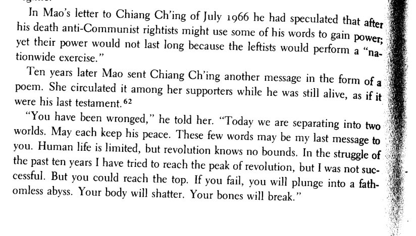

我被騙了。
給江青的詩
1976年5月/6月毛主席給江青的一封信節選
我被騙了。
我們正在分裂成兩個世界。
願每個人都能找到自己的平靜。
這幾個字符可能是我給你的最後一條信息……
人的一生是有限度的
但革命沒有
在過去十年的鬥爭中，我試圖達到革命的頂峰。
但是我失敗了…
或許你可以登頂
如果你失敗了，你將墜入深不可測的深淵。
你的身體會碎成碎片，你的骨頭會碎…
沒有和別人達成協議是好的……
如果刀刃轉動，我相信它會轉動，反對革命，
再一次，這將是必要的
游擊戰…
又是延安……
Poema para Chiang Ching
Excerto de carta escrita pelo Presidente Mao a Chiang Ching, em maio/junho de 1976
Fui enganado.
Estamos nos separando em dois mundos.
Que cada qual encontre sua paz.
Estes poucos caracteres podem ser minha última mensagem a ti…
A vida de um homem tem limites
Mas a revolução não tem
Na luta dos dez anos que passaram intentei alcançar o cume da revolução.
Mas tenho fracassado…
Talvez tu possas alcançar a cimeira
Se fracassar, cairás em um abismo insondável.
Teu corpo se fará em pedaços, teus ossos quebrarão…
Nenhum acordo com os outros é bom…
Se a lâmina se volta, e eu creio que se voltou, contra a revolução,
Uma vez mais será necessária
A guerra de guerrilhas…
De novo Yenán…
我記得The Banned Thought還有一首詩叫《水滸》。
adt
2022 年8 月 12 日 08:31
#3
我不想哪一天，中国再出现人剥削人的现象
（一九五九年十一月）
*这是毛主席在杭州南屏山住地同来杭州的几位政治局委员、几位省市领导同志和身边卫士长李银桥同志的谈话。
国庆节前我去了一次密云水库，告诉杨尚昆和彭真说要搞好环境建设和搞好绿化，为的是子孙后代；现在看来，搞环境建设，搞绿化，远远赶不上搞思想建设。为什么要这样讲呢？中国有句俗话，说是前人栽树，后人乘凉——搞好绿化固然重要，但也只能是从物质…
可以看一下江青的传记《江青同志》看里面有没有记载
我查了一下确实有记载。怎么知道有这首诗的估计要问Roxane Witke本人。
1 个赞
adt
2022 年8 月 12 日 10:55
#5

1 个赞
adt
2022 年8 月 12 日 11:27
#9
https://news.google.com/newspapers?nid=1301&dat=19770315&id=VgxiAAAAIBAJ&sjid=7OYDAAAAIBAJ&pg=919,4673316
“You have been wronged. Today we are separating into two worlds. I am old and will soon die. May each keep his peace. These few words may be my last message to you. Human life is limited, but revolution knows no bounds. In the struggle of the past ten years I have tried to reach the peak of revolution, but I was not successful. But you could reach the top. If you fail, you will plunge into a fathomless abyss. Your body will shatter. Your bones will break.” —Said to be a prose poem, summation and warning written by Mao shortly before his death and sent to Jiang Qing. [As posted by Mike Ely on the Kasama-Threads website on Oct. 15, 2008.]
1 个赞
adt
2022 年8 月 12 日 11:41
#10
1976年，毛泽东健康状况迅速恶化，吃药吃饭都需要人喂，每天只能吃一二两饭，行走更是困难[2] :445。周恩来于1月8日在北京病逝 [2] :445。5月起，毛泽东病情不断加重，身体极度衰弱；6月初，毛泽东突患心肌梗塞 ，经过及时抢救，才脱离危险[2] :462。7月，毛泽东许多时间处昏迷半昏迷状态，靠鼻饲生活[2] :464。进入8月，毛泽东健康状况更趋恶化，已常处昏迷状态[2] :465。8月18日，中共中央《关于唐山丰南一带抗震 救灾的通报》，是毛泽东生前圈阅之最后一份文件[2] :465。9月8日，毛泽东看文件、看书11次，共2小时50分钟[2] :465。
1 个赞
adt
2022 年8 月 12 日 15:52
#11
1 个赞
adt
2022 年8 月 12 日 16:06
#12
我没有英国的银行卡，但是我破解了卫报的api。
https://img.newspapers.com/img/thumbnail/260572325/400/400/0_0_500_500.jpg
import requests
headers = {
'User-Agent': 'Mozilla/5.0 (Windows NT 10.0; Win64; x64; rv:102.0) Gecko/20100101 Firefox/102.0',
'Accept': 'text/html,application/xhtml+xml,application/xml;q=0.9,image/avif,image/webp,*/*;q=0.8',
'Accept-Language': 'en-GB,en;q=0.5',
'Connection': 'keep-alive',
'Upgrade-Insecure-Requests': '1',
'Sec-Fetch-Dest': 'document',
'Sec-Fetch-Mode': 'navigate',
'Sec-Fetch-Site': 'cross-site',
'Pragma': 'no-cache',
'Cache-Control': 'no-cache',
}
for i in range(10):
for j in range(5, 12):
response = requests.get('https://img.newspapers.com/img/thumbnail/260580394/400/400/{}_{}_400_400.jpg'
.format(j * 400, i * 400), headers=headers)
with open("img__{}_{}.jpg".format(i, j), "wb") as f:
f.write(response.content)
print(i, j)
1 个赞
adt
2022 年8 月 12 日 17:15
#14
1 个赞